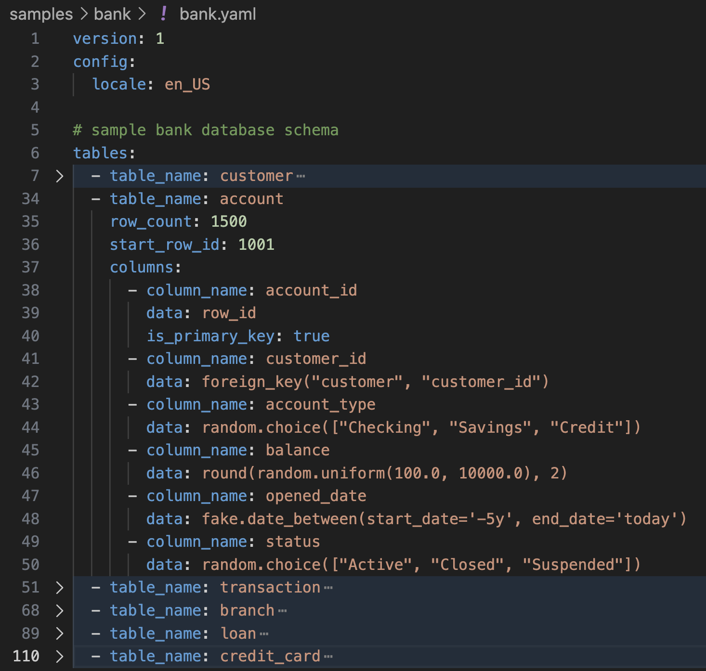
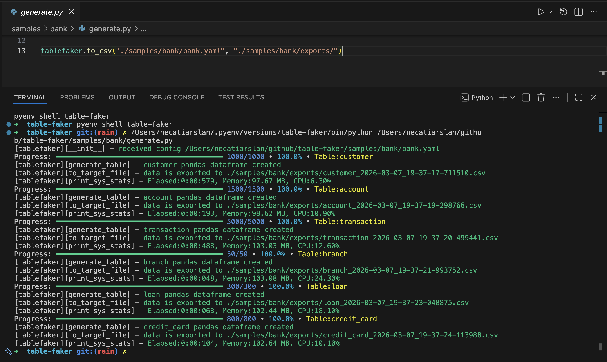

YAML-first schema design
Define columns, types, and generation logic in a readable config that works well in repos and CI.
Open Source Python Package
Define your schema in YAML once, then generate realistic multi-table data with Faker, relationships, deterministic seeds, and export targets for analytics and testing pipelines.
pip install tablefaker


Features
Define columns, types, and generation logic in a readable config that works well in repos and CI.
Use foreign_key(...) and copy_from_fk(...) for realistic parent-child data.
Set config.seed for reproducible datasets across local runs, tests, and pipelines.
Model skewed behavior with uniform, zipf, and weighted parent foreign-key sampling.
Use Python expressions, imports, and community Faker providers when built-in generators are not enough.
Run from terminal or import as a package for notebooks, scripts, and app-level test tooling.
Output Formats
Export in the format your workflow already expects.
Examples
tables:
- table_name: person
columns:
- column_name: id
data: row_id
- column_name: first_name
data: fake.first_name()
- column_name: last_name
data: fake.last_name()tablefaker \
--config tests/test_table.yaml \
--file_type csv \
--target ./exports \
--seed 42Use --infer-attrs true to override attribute inference from the command line.
Advanced Features
Expand each item to copy focused YAML and Code examples for advanced generation patterns.
Use seed to generate the same rows on repeated runs.
config:
locale: en_US
seed: 123
tables:
- table_name: person
row_count: 3
columns:
- column_name: id
data: row_id
- column_name: first_name
data: fake.first_name()Use python_import to call external Python modules/functions in column expressions.
config:
locale: en_US
python_import:
- dateutil
- hotel_custom_calendar_utils
tables:
- table_name: person
row_count: 2
columns:
- column_name: id
data: row_id
- column_name: easter_date
data: dateutil.easter.easter(2026).strftime('%Y-%m-%d')Set export_file_count to split one table into a fixed number of output files.
tables:
- table_name: person
row_count: 100
export_file_count: 2
columns:
- column_name: id
data: row_id
- column_name: first_name
data: fake.first_name()Use export_file_row_count to cap rows per exported file.
tables:
- table_name: employee
row_count: 10
export_file_row_count: 5
columns:
- column_name: id
data: row_id
- column_name: title
data: fake.job()Start generated row IDs from a custom value using start_row_id.
tables:
- table_name: hotel
row_count: 3
start_row_id: 100
columns:
- column_name: hotel_id
data: row_id
is_primary_key: true
- column_name: name
data: fake.company() + " Hotel"Mark parent keys with is_primary_key and reference them from child rows using foreign_key(...).
tables:
- table_name: customers
row_count: 50
columns:
- column_name: customer_id
data: row_id
is_primary_key: true
- table_name: orders
row_count: 1000
columns:
- column_name: order_id
data: row_id
- column_name: customer_id
data: foreign_key("customers", "customer_id")
- column_name: total_amount
data: round(random.uniform(10, 500), 2)Use copy_from_fk(...) to copy related parent attributes into child records.
tables:
- table_name: customers
row_count: 3
columns:
- column_name: customer_id
data: row_id
is_primary_key: true
- column_name: email
data: fake.email()
- table_name: orders
row_count: 5
columns:
- column_name: order_id
data: row_id
- column_name: customer_id
data: foreign_key("customers", "customer_id")
- column_name: customer_email
data: copy_from_fk("customers", "customer_id", "email")Write multi-line Python logic in data: | when expressions become too complex for one line.
tables:
- table_name: person
row_count: 10
columns:
- column_name: id
data: row_id
- column_name: age
data: fake.random_int(18, 90)
- column_name: discount_eligibility # custom python function
data: |
if age < 25 or age > 60:
return True
else:
return FalseUse the Python API to export datasets in multiple formats or load generated tables as pandas dataframes.
import tablefaker
# exports to current folder in csv format
tablefaker.to_csv("test_table.yaml")
# exports to sql insert into scripts to insert to your database
tablefaker.to_sql("test_table.yaml")
# exports all tables in json format
tablefaker.to_json("test_table.yaml", "./target_folder")
# exports all tables in parquet format
tablefaker.to_parquet("test_table.yaml", "./target_folder")
# exports all tables in deltalake format
tablefaker.to_deltalake("test_table.yaml", "./target_folder")
# export single table to the provided folder
tablefaker.to_deltalake("test_table.yaml", "./target_folder/person/", table_name="person")
# exports only the first table in excel format
tablefaker.to_excel("test_table.yaml", "./target_folder/target_file.xlsx")
# get as pandas dataframes
df_dict = tablefaker.to_pandas("test_table.yaml")
person_df = df_dict["person"]
print(person_df.head(5))Use CLI flags to control output type, target path, seed values, and attribute inference from the command line.
# exports to current folder in csv format (reads community_providers from config)
tablefaker --config tests/test_table.yaml
# exports as sql insert script files
tablefaker --config tests/test_table.yaml --file_type sql --target ./out
# exports to current folder in excel format
tablefaker --config tests/test_table.yaml --file_type excel
# exports all tables in json format to a folder
tablefaker --config tests/test_table.yaml --file_type json --target ./target_folder
# exports a single table to a parquet file
tablefaker --config tests/test_table.yaml --file_type parquet --target ./target_folder/target_file.parquet
# pass an explicit seed and enable attribute inference
tablefaker --config tests/test_table.yaml --seed 42 --infer-attrs trueDefine your own Python function and pass it with custom_function, then call it inside YAML (for example: get_level()).
from tablefaker import tablefaker
from faker import Faker
fake = Faker()
def get_level():
return f"level {fake.random_int(1, 5)}"
tablefaker.to_csv("test_table.yaml", "./target_folder", custom_function=get_level)
# yaml snippet
tables:
- table_name: employee
row_count: 5
columns:
- column_name: id
data: row_id
- column_name: level
data: get_level() # custom functionGenerate starter YAML configs directly from an Avro schema or a CSV column definition file.
from tablefaker import tablefaker
# generate yaml from avro schema
tablefaker.avro_to_yaml("tests/test_person.avsc", "tests/exports/person.yaml")
# generate yaml from csv definition
tablefaker.csv_to_yaml("tests/test_person.csv", "tests/exports/person.yaml")Use distribution="uniform" for evenly distributed parent key sampling.
tables:
- table_name: customers
row_count: 50
columns:
- column_name: customer_id
data: row_id
is_primary_key: true
- table_name: orders_uniform
row_count: 1000
columns:
- column_name: order_id
data: row_id
- column_name: customer_id
data: foreign_key("customers", "customer_id", distribution="uniform")Use distribution="zipf" to create popularity skew where a small set of parent rows appears more often.
tables:
- table_name: customers
row_count: 50
columns:
- column_name: customer_id
data: row_id
is_primary_key: true
- table_name: orders_zipf
row_count: 1000
columns:
- column_name: order_id
data: row_id
- column_name: customer_id
data: foreign_key("customers", "customer_id", distribution="zipf", param=1.1)Use weighted_parent to bias foreign keys using a parent attribute and explicit weights.
tables:
- table_name: customers
row_count: 50
columns:
- column_name: customer_id
data: row_id
is_primary_key: true
- column_name: rating
data: random.choice([5,4,3])
- table_name: orders_weighted
row_count: 3000
columns:
- column_name: order_id
data: row_id
- column_name: customer_id
data: foreign_key("customers", "customer_id", distribution="weighted_parent", parent_attr="rating", weights={"5":3,"4":2,"3":1})Quick Start
Install from PyPI with pip install tablefaker.
Define tables, columns, and generation expressions in a single config file.
Use CLI or Python API to export data into CSV, JSON, Parquet, SQL, Excel, or Delta Lake.
FAQ
Yes. Set config.seed or pass --seed to generate reproducible output.
Yes. Define primary keys and use foreign_key() and copy_from_fk() in child tables.
Yes. Add providers through config.community_providers or Python API options.
Use the GitHub repository issues page for bug reports and feature requests.
Open source, scriptable, and ready for local development, CI, and analytics workflows.